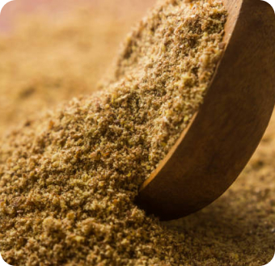
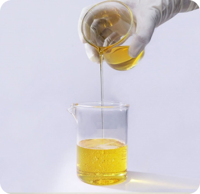
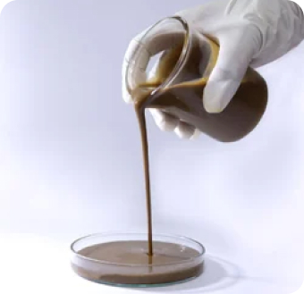

DRY INGREDIENTS
PP bags & jumbo bags
Bagged formats for fish meal. Confirm bag weight, lining, labelling and pallet requirements.
Fish meal, marine oils and specialty ingredients.
Connecting the richness of the ocean with the needs of industry.
We turn marine resources into ingredients with a purpose.
Based in Aroor, Kerala, Bristol Proteins & Oils Pvt. Ltd. manufactures fish meal, fish oils and related products for a broad range of formulation and processing requirements.
As a sister concern of Bawa Fishmeal & Oil Co., we share a connection to the marine-products industry — with a Bristol identity of our own.
Meet Bristol
A concentrated protein ingredient for feed formulations.
Explore product
Crude, refined and specialty oils for specific applications.
Explore product
Soluble proteins and amino acids in concentrated form.
Explore product MARINE RESOURCES. MULTIPLE POSSIBILITIES.
MARINE RESOURCES. MULTIPLE POSSIBILITIES.Marine ingredient production separates raw material into valuable protein, oil and soluble fractions. Each product follows its own processing path.
Discuss the right format for your ingredient, volume and destination.
Bagged formats for fish meal. Confirm bag weight, lining, labelling and pallet requirements.

Discuss container options suited to your oil grade and handling requirements.

Confirm product compatibility, loading quantity and transport arrangements for larger shipments.
Industry reference images. Packaging formats and capacities are confirmed by Bristol for each enquiry.
Product. Specification. Packaging. Destination.
Let’s put the details together.